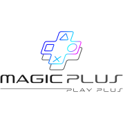
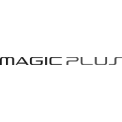
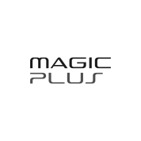
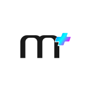
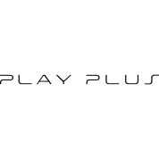
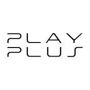
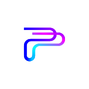
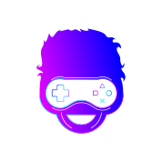

الشعار الكامل
وهو الشعار بكامل عناصره وتكويناته، ويفضّل اعتماده في معظم الحالات متى ما كان ذلك ممكناً، نظراً لشموليته وقدرته على تمثيل الهوية بشكل متكامل وواضح.
الشعار المختزل
وهو الشعار منفرداً دون الشعار الإعلاني، ويمكن استخدامه في جميع المواضع دون قيود، لما يتمتع به من وضوح واستقلالية في تمثيل الهوية.

الشعار النصي
وهو الشعار النصي فقط دون الأيقونة، ويُفضل استخدامه في المساحات الصغيرة أو المحدودة، حيث تبرز الحاجة إلى تبسيط العناصر مع الحفاظ على وضوح الهوية.

الشعار النصي الطولي
ترتيب بديل للشعار النصي يهدف إلى تحقيق أقصى درجات المرونة في الاستخدام، بما يضمن تكيفه مع مختلف المساحات والتطبيقات التصميمية دون التأثير على وضوح الهوية أو اتساقها.

الأيقونة
وهي عنصر بصري مشتق من الشعار، تم توليده من خلال استخدام حرف M المميز في الشعار إلى جانب علامة الزائد (+) بألوان الهوية، وذلك للدلالة على مفهوم PLUS بطريقة متناسقة مع النظام البصري العام.

الشعار الإعلاني
تم رسم الشعار الإعلاني باستخدام نفس الخط المخصص للعلامة التجارية، مع تقليل سمكه مقارنة بالشعار الأساسي، وذلك لضمان عدم التنافس البصري بينهما عند ظهورهما معاً، مما يحافظ على وضوح التسلسل البصري ويبرز الشعار الأساسي كالعنصر الأهم.

الشعار الإعلاني الطولي
ترتيب بديل للشعار الإعلاني يهدف إلى تحقيق أعلى درجات المرونة في الاستخدام، بما يسمح بتكيّفه مع مختلف المساحات والتنسيقات، مع الحفاظ على وضوح الرسالة الإعلانية واتساقها مع الهوية البصرية العامة.

أيقونة الشعار الإعلاني
تم استحداث هذه الأيقونة من الشعار الإعلاني بهدف استخدامها كممثل بصري للشعار في المساحات الصغيرة.

التميمة (الشخصية الرمزية)
وهو إعادة تصميم للشعار القديم، إلا أنه يُستخدم الآن كتميمة يمكنها أن تحل محل الشعار بالكامل. كما يُضفي بُعدًا بصريًا إضافيًا على الهوية والعلامة التجارية بشكل عام.